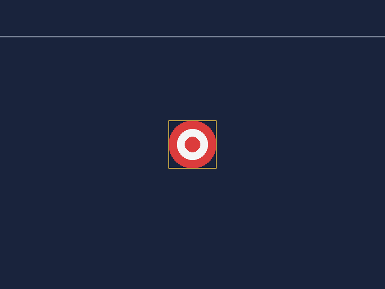
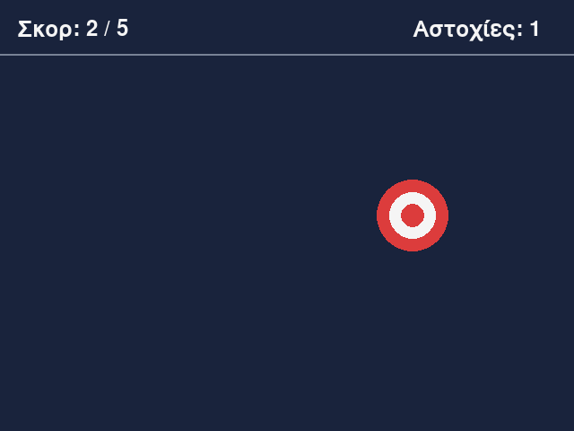
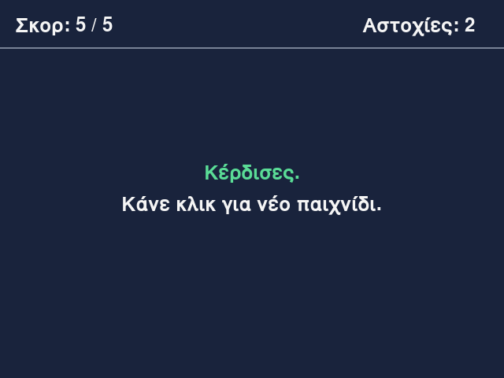

Μάθημα 7: Πάτα τον στόχο¶
Παιχνίδι: κάνε κλικ σε έναν στόχο που αλλάζει θέση, μέχρι να πετύχεις πέντε φορές
Διάρκεια: 4 κύκλοι × (περίπου 45′ εργασία + 15′ διάλειμμα)
Φύλλο εργασίας
Αυτή η σελίδα εξηγεί τις έννοιες. Οι ασκήσεις και οι οδηγίες για κάθε κύκλο βρίσκονται στο Φύλλο εργασίας 7. Δούλεψε με τις δύο σελίδες ανοιχτές.
Αρχεία εργαστηρίου¶
| Αρχείο | Κύκλος |
|---|---|
| 01-window.py | 1 |
| 02-drawing.py | 2 |
| 03-click.py | 3 |
| 04-final.py | 4 |
| exercises.py | 1–4 (οι ασκήσεις «γράψε εσύ») |
| check_exercises.py | 1–4 (αυτοέλεγχος των ασκήσεων) |
Κατέβασε και τα έξι αρχεία στον ίδιο φάκελο.
Η αποστολή¶
Μέχρι τώρα τα παιχνίδια έτρεχαν στο τερματικό: έγραφαν κείμενο και περίμεναν να πληκτρολογήσεις. Από σήμερα φτιάχνεις παιχνίδια με παράθυρο, χρώματα και ποντίκι, με τη βιβλιοθήκη pygame-ce.
Το πρώτο παιχνίδι είναι απλό. Στο παράθυρο εμφανίζεται ένας στόχος. Κάθε φορά που τον πατάς, κερδίζεις έναν πόντο και ο στόχος πηγαίνει σε νέα τυχαία θέση. Αν πατήσεις αλλού, μετρά αστοχία. Το παιχνίδι τελειώνει με πέντε επιτυχίες, και ένα κλικ ξεκινά νέο παιχνίδι.
Για να γίνει αυτό, το πρόγραμμα χρειάζεται τέσσερα πράγματα που δεν έχεις δει:
- Ένα παράθυρο που μένει ανοιχτό και ξαναζωγραφίζεται συνεχώς. Αυτός είναι ο βρόχος του παιχνιδιού.
- Έναν τρόπο να ζωγραφίζει σχήματα και χρώματα. Αυτά είναι οι συντεταγμένες, οι επιφάνειες και οι συναρτήσεις σχεδίασης.
- Έναν τρόπο να ακούει τι κάνει ο παίκτης. Αυτά είναι τα συμβάντα (events).
- Κείμενο στο παράθυρο, για το σκορ και τα μηνύματα.
Όλα τα υπόλοιπα τα ξέρεις: μεταβλητές, if, while, for, λίστες, πλειάδες, συναρτήσεις και κλάσεις. Η pygame-ce
δεν αλλάζει την Python· σου δίνει έτοιμα αντικείμενα και συναρτήσεις για παράθυρα και γραφικά, και τα
χρησιμοποιείς με όσα έμαθες στα Μαθήματα 1–6.
Στο τέλος θα μπορείς¶
- να ανοίγεις παράθυρο με την pygame-ce και να το κρατάς ανοιχτό με έναν βρόχο παιχνιδιού.
- να εξηγείς τι γίνεται σε κάθε καρέ: συμβάντα, ενημέρωση της κατάστασης, σχεδίαση.
- να χρησιμοποιείς συντεταγμένες (το y μεγαλώνει προς τα κάτω) και χρώματα RGB.
- να ζωγραφίζεις ορθογώνια, κύκλους, γραμμές και πολύγωνα με τις
pygame.draw.rect,pygame.draw.circle,pygame.draw.lineκαιpygame.draw.polygon. - να χρησιμοποιείς το
pygame.Rectκαι τις ιδιότητές του (x,y,width,height,center,right,bottom). - να διαβάζεις συμβάντα του ποντικιού (
MOUSEBUTTONDOWN,event.pos,event.button) και να ελέγχεις με τηνcollidepointαν ένα κλικ έπεσε μέσα σε ορθογώνιο. - να γράφεις κείμενο στο παράθυρο με τα
Font,renderκαιblit. - να οργανώνεις ένα παιχνίδι με μεταβλητές κατάστασης (
score,misses,game_over). - να περιορίζεις τον βρόχο στα 60 καρέ το δευτερόλεπτο με το
Clock.
Πριν αρχίσεις¶
- Μέσα στον φάκελο
python-gamesφτιάξε τον φάκελο07-click-target. - Κατέβασε εκεί τα έξι αρχεία του πίνακα, με τα ακριβή τους ονόματα.
- Άνοιξε τον φάκελο στο VS Code και άνοιξε τερματικό.
- Έλεγξε ότι η pygame-ce είναι εγκατεστημένη:
Πρέπει να δεις μια γραμμή που αρχίζει με pygame-ce και μετά τον αριθμό έκδοσης. Αν δεις
ModuleNotFoundError, ακολούθησε τα βήματα της σελίδας Εγκατάσταση και ρύθμιση, ενότητα 4.
- Φτιάξε ένα κενό αρχείο
sandbox.pyγια δοκιμές, όπως στα προηγούμενα μαθήματα.
Μην ονομάσεις αρχείο pygame.py
Αν ένα αρχείο σου λέγεται pygame.py, το import pygame θα φορτώσει το δικό σου αρχείο αντί για τη
βιβλιοθήκη. Θα δεις σφάλμα όπως AttributeError: module 'pygame' has no attribute 'init', και το μήνυμα θα
προτείνει να μετονομάσεις το αρχείο. Το ίδιο ισχύει για κάθε βιβλιοθήκη: ένα αρχείο random.py χαλά το import random.
Ο κύκλος εργασίας
Πρόβλεψη → εκτέλεση → σύγκριση → εξήγηση. Όπως στα προηγούμενα μαθήματα. Σε ένα παιχνίδι με γραφικά, η πρόβλεψη είναι και «πού θα εμφανιστεί αυτό στο παράθυρο;». Γράψε την πρόβλεψή σου πριν τρέξεις.
Κύκλος 1 — Το παράθυρο και ο βρόχος του παιχνιδιού¶
Σε αυτόν τον κύκλο ανοίγεις ένα παράθυρο και μαθαίνεις γιατί ένα παιχνίδι είναι ένας βρόχος που δεν τελειώνει.
1.1 Τι είναι η pygame-ce¶
Η pygame-ce είναι βιβλιοθήκη για παιχνίδια δύο διαστάσεων. Σου δίνει παράθυρο, σχεδίαση, κείμενο, ήχο και πρόσβαση σε ποντίκι και πληκτρολόγιο. Δεν σου δίνει «έτοιμο παιχνίδι»: τον κανόνα του παιχνιδιού τον γράφεις εσύ, με Python.
- Εγκαθιστάς το πακέτο
pygame-ce, αλλά στον κώδικα γράφειςimport pygame(το ίδιο όνομα με το αρχικό pygame). - Η pygame-ce είναι για υπολογιστές. Δεν τρέχει σε κινητά με Android ή iOS.
- Η
pygame.init()ξεκινά τα μέρη της βιβλιοθήκης (οθόνη, γραμματοσειρές, ήχος). Την καλείς μία φορά, στην αρχή. Αν την ξεχάσεις, κάποιες λειτουργίες δεν δουλεύουν, π.χ. οι γραμματοσειρές δίνουνpygame.error: font not initialized. - Η βιβλιοθήκη είναι χωρισμένη σε ενότητες (modules), καθεμία με συναρτήσεις και κλάσεις για μία δουλειά:
| Module | Τι κάνει | Πού το χρησιμοποιείς |
|---|---|---|
pygame.display |
το παράθυρο και η ανανέωσή του | Μάθημα 7 |
pygame.draw |
σχήματα: ορθογώνια, κύκλοι, γραμμές, πολύγωνα | Μάθημα 7 |
pygame.event |
συμβάντα: ποντίκι, πληκτρολόγιο, κλείσιμο | Μάθημα 7 και επόμενα |
pygame.font |
γραμματοσειρές και κείμενο | Μάθημα 7 |
pygame.time |
ρολόι και χρόνος | Μάθημα 7 και επόμενα |
pygame.math |
διανύσματα (θέση και ταχύτητα ως ζεύγη αριθμών) | δεν το χρησιμοποιούμε· για αποστάσεις θα χρησιμοποιήσεις το math της Python, στο Μάθημα 10 |
pygame.image |
φόρτωση εικόνων | Μάθημα 11 |
pygame.mixer |
ήχοι και μουσική | Μάθημα 12 |
Το pygame.sprite θα το δεις σε οδηγίες του διαδικτύου. Στο υλικό δεν το χρησιμοποιούμε: τα αντικείμενα των
παιχνιδιών τα φτιάχνουμε με δικές μας κλάσεις, όπως έμαθες στο Μάθημα 6.
Θα δεις δύο ειδών κλήσεις:
| Κλήση | Τι είναι | Παράδειγμα |
|---|---|---|
pygame.draw.circle(...) |
συνάρτηση μιας ενότητας (module) της βιβλιοθήκης | pygame.display.set_mode(...), pygame.event.get() |
screen.fill(...) |
μέθοδος ενός αντικειμένου, όπως η fighter.heal() του Μαθήματος 6 |
target.collidepoint(...), font.render(...) |
Τα βασικά αντικείμενα της pygame-ce (Surface, Rect, Font, Clock) είναι κλάσεις, όπως η Fighter: φτιάχνεις
ένα αντικείμενο και καλείς τις μεθόδους του. Δεν θα γράψεις δικές σου κλάσεις σήμερα.
1.2 Το παράθυρο¶
import pygame
pygame.init()
screen = pygame.display.set_mode((640, 480))
pygame.display.set_caption("Πάτα τον στόχο")
- Η
pygame.display.set_modeανοίγει το παράθυρο. Παίρνει ένα όρισμα: την πλειάδα(πλάτος, ύψος), σε pixel. Αν γράψειςset_mode(640, 480)με δύο ορίσματα, παίρνειςTypeError: size must be two numbers. - Επιστρέφει μια επιφάνεια (
Surface): την περιοχή του παραθύρου όπου ζωγραφίζεις. Την αποθηκεύουμε στοscreen. - Η
pygame.display.set_captionβάζει τον τίτλο του παραθύρου. - Το πλάτος και το ύψος μπαίνουν σε σταθερές (
WIDTH,HEIGHT), ώστε να τα αλλάζεις σε ένα σημείο.
Αν το πρόγραμμα τελειώσει αμέσως μετά το set_mode, το παράθυρο ανοίγει και κλείνει σε κλάσμα του δευτερολέπτου.
Θέλουμε το παράθυρο να μένει ανοιχτό μέχρι να το κλείσει ο παίκτης. Γι' αυτό χρειάζεται ο βρόχος της ενότητας 1.5.
1.3 Συντεταγμένες¶
Το παράθυρο είναι ένας πίνακας από pixel (εικονοστοιχεία): τελείες χρώματος. Ένα παράθυρο 640 × 480 έχει 640
στήλες και 480 γραμμές. Κάθε θέση γράφεται ως (x, y):
- το x μετρά από την αριστερή πλευρά, προς τα δεξιά,
- το y μετρά από την πάνω πλευρά, προς τα κάτω.
| Θέση | Συντεταγμένες |
|---|---|
| πάνω αριστερή γωνία | (0, 0) |
| πάνω δεξιά γωνία | (639, 0) |
| κάτω αριστερή γωνία | (0, 479) |
| κάτω δεξιά γωνία | (639, 479) |
| κέντρο | (320, 240) |
Προσοχή, γιατί διαφέρει από τα μαθηματικά: το y μεγαλώνει προς τα κάτω. Για να μετακινήσεις κάτι προς τα πάνω, μειώνεις το y. Το τελευταίο pixel είναι το 639 και όχι το 640, γιατί η αρίθμηση ξεκινά από το 0, όπως στις λίστες.
1.4 Χρώματα¶
Ένα χρώμα γράφεται ως πλειάδα τριών ακεραίων από 0 έως 255: πόσο κόκκινο, πράσινο και μπλε φως (RGB).
| Χρώμα | RGB |
|---|---|
| μαύρο | (0, 0, 0) |
| λευκό | (255, 255, 255) |
| κόκκινο | (255, 0, 0) |
| πράσινο | (0, 255, 0) |
| μπλε | (0, 0, 255) |
| κίτρινο (κόκκινο και πράσινο) | (255, 255, 0) |
| γκρι | (128, 128, 128) |
- Μεγαλύτερες τιμές σημαίνουν φωτεινότερο χρώμα. Το
(25, 35, 60)είναι ένα σκούρο μπλε, κατάλληλο για φόντο. - Τιμή εκτός 0–255 είναι σφάλμα:
ValueError: invalid color (color sequence must have size 3 or 4, and each element must be an integer in the range [0, 255]). Για να κρατάς μια τιμή μέσα σε όρια ξέρεις ήδη το πρότυποmin(255, …)από το Μάθημα 4. - Η pygame-ce δέχεται και ονόματα όπως
"red", αλλά στο υλικό γράφουμε τριάδες RGB, για να καταλαβαίνεις πώς φτιάχνονται τα χρώματα. Τα χρώματα μπαίνουν σε σταθερές με κεφαλαία:BACKGROUND = (25, 35, 60). - Η μέθοδος
screen.fill(χρώμα)χρωματίζει ολόκληρη την επιφάνεια με αυτό το χρώμα.
1.5 Ο βρόχος του παιχνιδιού¶
Ένα πρόγραμμα της κονσόλας περιμένει να πληκτρολογήσεις. Ένα παιχνίδι με παράθυρο δεν περιμένει: ξαναζωγραφίζει την οθόνη περίπου 60 φορές το δευτερόλεπτο, και σε κάθε επανάληψη ελέγχει αν ο παίκτης έκανε κάτι. Κάθε επανάληψη λέγεται καρέ (frame) και κάνει τρία πράγματα, πάντα με αυτή τη σειρά:
- Συμβάντα: τι έκανε ο παίκτης από το προηγούμενο καρέ (κλικ, πλήκτρο, κλείσιμο του παραθύρου);
- Ενημέρωση: αλλαγή της κατάστασης του παιχνιδιού (σκορ, θέσεις).
- Σχεδίαση: ζωγράφισμα του καρέ από την αρχή, και εμφάνισή του.
Ο κώδικας που τα κάνει είναι ο βρόχος του παιχνιδιού (game loop), και είναι ίδιος σε όλα τα παιχνίδια:
running = True
while running:
for event in pygame.event.get():
if event.type == pygame.QUIT:
running = False
screen.fill(BACKGROUND)
pygame.display.flip()
pygame.quit()
Διάβασέ τον γραμμή προς γραμμή:
- Το
runningείναι σημαία, όπως ηfoundτου Μαθήματος 1. Ο βρόχος τρέχει όσο είναιTrue. - Η
pygame.event.get()επιστρέφει λίστα με όλα τα συμβάντα που έγιναν από την προηγούμενη φορά. Οforτα εξετάζει ένα ένα. Το συμβάνpygame.QUITφτάνει όταν ο παίκτης πατήσει το X του παραθύρου. - Όταν φτάσει το
QUIT, τοrunningγίνεταιFalse. Ο βρόχος ολοκληρώνει το καρέ και μετά τελειώνει. - Η
screen.fillζωγραφίζει το φόντο. Ηpygame.display.flip()δείχνει στην οθόνη το καρέ που ετοιμάστηκε. Ό,τι ζωγραφίζεις πηγαίνει πρώτα σε μια κρυφή εικόνα· ηflipτην εμφανίζει μονομιάς, ώστε να μη βλέπεις το καρέ να «χτίζεται» με τρεμόπαιγμα. Ηpygame.display.update(), χωρίς ορίσματα, κάνει το ίδιο. Μπορεί όμως να ανανεώσει και μόνο ένα τμήμα της οθόνης· στο υλικό χρησιμοποιούμε πάντα τηflip. - Η
pygame.quit()μετά τον βρόχο ελευθερώνει τους πόρους που πήρε ηpygame.init().
Ιχνηλάτηση δύο καρέ, όταν ο παίκτης πατά το X στο δεύτερο:
| Καρέ | Συμβάντα | running μετά τη λίστα |
Τι ζωγραφίζεται |
|---|---|---|---|
| 1 | κανένα | True |
φόντο, flip |
| 2 | QUIT |
False |
φόντο, flip. Μετά ο βρόχος τελειώνει |
Τι θα γίνει αν λείψει κάτι:
| Αν λείπει… | Τότε… |
|---|---|
ο έλεγχος του QUIT |
το X δεν κλείνει το παράθυρο. Σταματάς το πρόγραμμα με Ctrl + C στο τερματικό |
η pygame.event.get() |
το παράθυρο δεν απαντά στο λειτουργικό σύστημα: εμφανίζεται «Δεν αποκρίνεται» |
η flip |
το παράθυρο μένει κενό, όσα κι αν ζωγραφίσεις |
η fill πριν τα σχήματα |
οι εικόνες των προηγούμενων καρέ μένουν στην οθόνη και «μουτζουρώνουν» (δες την ενότητα 2.6) |
1.6 Πώς τρέχεις το πρόγραμμα¶
Όπως πάντα: python 01-window.py από το τερματικό. Το παράθυρο μπορεί να ανοίξει πίσω από το VS Code· ψάξε το
στη γραμμή εργασιών. Κλείσε το με το X. Αν δεν κλείνει (π.χ. από λάθος στον κώδικα), πάτα Ctrl + C στο
τερματικό. Αν το τερματικό δεν αντιδρά, κλείσε το τερματικό του VS Code.
Στάδιο 1 — Το παράθυρο¶
Άνοιξε το 01-window.py. Συμπλήρωσε τα πέντε κενά και τρέξε το. Πρέπει να εμφανιστεί ένα σκούρο μπλε παράθυρο που
κλείνει με το X.
"""Στάδιο 1 — Το παράθυρο και ο βρόχος του παιχνιδιού.
Συμπλήρωσε τα πέντε κενά (____). Όταν το πρόγραμμα τρέξει, εμφανίζεται ένα παράθυρο με σκούρο μπλε
φόντο, που μένει ανοιχτό μέχρι να το κλείσεις με το X.
"""
import pygame
pygame.init()
WIDTH = 640
HEIGHT = 480
BACKGROUND = (25, 35, 60)
# TODO 1: το μέγεθος του παραθύρου δίνεται ως ΜΙΑ πλειάδα (πλάτος, ύψος)
screen = pygame.display.set_mode(____)
pygame.display.set_caption("Πάτα τον στόχο")
running = True
while running:
# TODO 2: πάρε όλα τα συμβάντα που έγιναν από το προηγούμενο καρέ
for event in pygame.event.____():
# TODO 3: το συμβάν που φτάνει όταν ο χρήστης πατά το X του παραθύρου
if event.type == pygame.____:
running = False
# TODO 4: γέμισε ολόκληρο το παράθυρο με το χρώμα του φόντου
screen.____(BACKGROUND)
# TODO 5: εμφάνισε στην οθόνη ό,τι ζωγραφίστηκε σε αυτό το καρέ
pygame.display.____()
pygame.quit()
Συνέχισε στο Φύλλο εργασίας, Κύκλος 1.
Κύκλος 2 — Σχεδίαση¶
Το παράθυρο είναι έτοιμο. Τώρα ζωγραφίζεις τον στόχο και τη γραμμή πληροφοριών.
2.1 Η επιφάνεια (Surface)¶
Μια επιφάνεια (Surface) είναι μια εικόνα στη μνήμη: ένας πίνακας από pixel. Το screen είναι η επιφάνεια του
παραθύρου. Όλη η σχεδίαση γίνεται πάνω σε μια επιφάνεια, και οι συναρτήσεις σχεδίασης την παίρνουν ως πρώτο
όρισμα:
Στον Κύκλο 4 θα φτιάξεις και άλλες επιφάνειες (το κείμενο είναι μια επιφάνεια) και θα τις αντιγράψεις πάνω στο screen.
2.2 Το ορθογώνιο (pygame.Rect)¶
Το pygame.Rect είναι κλάση που κρατά ένα ορθογώνιο: pygame.Rect(x, y, width, height). Το (x, y) είναι
η πάνω αριστερή γωνία. Το αντικείμενο έχει ιδιότητες για όλες τις πλευρές και τα σημεία του:
import pygame
box = pygame.Rect(100, 50, 80, 40)
print(box.x, box.y, box.width, box.height) # 100 50 80 40
print(box.right, box.bottom) # 180 90
print(box.center) # (140, 70)
print(box.topleft, box.size) # (100, 50) (80, 40)
| Ιδιότητα | Τι είναι | Για Rect(100, 50, 80, 40) |
|---|---|---|
x, left |
αριστερή πλευρά | 100 |
y, top |
πάνω πλευρά | 50 |
width, height |
πλάτος, ύψος | 80, 40 |
right |
x + width |
180 |
bottom |
y + height |
90 |
center |
το κέντρο, ως (x, y) |
(140, 70) |
topleft, size |
πάνω αριστερή γωνία, μέγεθος | (100, 50), (80, 40) |
Δύο πράγματα να προσέχεις:
- Το
rightείναι το πρώτο pixel έξω από το ορθογώνιο. ΤοRect(100, 50, 80, 40)καλύπτει τα x από 100 έως 179 και τα y από 50 έως 89. - Μπορείς να αλλάξεις μια ιδιότητα και οι υπόλοιπες ακολουθούν:
Στο πρώτο παράδειγμα το κέντρο μετακινήθηκε και η πάνω αριστερή γωνία ακολούθησε. Στο δεύτερο, η δεξιά πλευρά
έγινε 300 και το x έγινε 300 - 80 = 220 (το πλάτος δεν αλλάζει).
2.3 Ορθογώνια με pygame.draw.rect¶
Η pygame.draw.rect(επιφάνεια, χρώμα, ορθογώνιο, πάχος) ζωγραφίζει ένα ορθογώνιο. Το τελευταίο όρισμα, το
πάχος, είναι προαιρετικό:
- χωρίς πάχος (ή με
0) το ορθογώνιο γεμίζει με το χρώμα, - με
1ή περισσότερο ζωγραφίζεται μόνο το περίγραμμα, με αυτό το πάχος σε pixel.
Αντί για Rect μπορείς να δώσεις και πλειάδα (x, y, πλάτος, ύψος).
2.4 Κύκλοι και γραμμές¶
pygame.draw.circle(screen, RED, (320, 240), 40)
pygame.draw.line(screen, GREY, (0, 60), (640, 60), 2)
- Η
pygame.draw.circle(επιφάνεια, χρώμα, κέντρο, ακτίνα, πάχος)ζωγραφίζει κύκλο. Το κέντρο είναι πλειάδα(x, y)(όχιRect) και η ακτίνα ακέραιος σε pixel. Το πάχος λειτουργεί όπως στο ορθογώνιο. - Η
pygame.draw.line(επιφάνεια, χρώμα, αρχή, τέλος, πάχος)ενώνει δύο σημεία. Το πάχος είναι εδώ1αν δεν το γράψεις. - Η
pygame.draw.polygon(επιφάνεια, χρώμα, σημεία, πάχος)ζωγραφίζει πολύγωνο που ενώνει μια λίστα σημείων. Ηpygame.draw.polygon(screen, GREEN, [(150, 5), (130, 35), (170, 35)])ζωγραφίζει ένα τρίγωνο. Χρειάζεται τουλάχιστον τρία σημεία, αλλιώςValueError: points argument must contain more than 2 points. Το παιχνίδι δεν το χρησιμοποιεί, αλλά θα το χρειαστείς στις δικές σου εκδοχές (βέλη, αστέρια, ρόμβοι). - Για να βρεις το κέντρο του στόχου δεν χρειάζεται να κάνεις πράξεις: το
target.centerείναι ήδη η πλειάδα που θέλει ηcircle.
2.5 Η σειρά της σχεδίασης¶
Ό,τι ζωγραφίζεις αργότερα καλύπτει ό,τι ζωγραφίστηκε νωρίτερα, όπως στη ζωγραφική με χρώματα. Ο στόχος μας είναι τρεις ομόκεντροι κύκλοι (ίδιο κέντρο), και ο μεγαλύτερος ζωγραφίζεται πρώτος:
radius = target.width // 2
pygame.draw.circle(screen, RED, target.center, radius)
pygame.draw.circle(screen, WHITE, target.center, radius * 2 // 3)
pygame.draw.circle(screen, RED, target.center, radius // 3)
Για target.width ίσο με 80, οι ακτίνες είναι 40, 26 και 13. Αν ζωγράφιζες πρώτα τον μικρό κύκλο και μετά τον
μεγάλο, θα έβλεπες έναν κόκκινο δίσκο, γιατί ο μεγάλος θα κάλυπτε τους μικρούς. Η // είναι η ακέραια διαίρεση που
ξέρεις από το Μάθημα 1: οι ακτίνες πρέπει να είναι ακέραιοι.
2.6 Κάθε καρέ ξαναζωγραφίζεται από την αρχή¶
Η οθόνη δεν «θυμάται» τι σχεδίασες. Σε κάθε καρέ ζωγραφίζεις ολόκληρη την εικόνα από την αρχή, ξεκινώντας με
screen.fill. Αν σβήσεις προσωρινά τη fill και μετακινήσεις κάτι, θα δεις ότι αφήνει ίχνος, γιατί το νέο καρέ
ζωγραφίζεται πάνω στο παλιό. Αυτή η αρχή (πρώτα φόντο, μετά ό,τι αλλάζει) ισχύει σε κάθε παιχνίδι που θα φτιάξεις.
2.7 Η διάταξη του παιχνιδιού¶
┌──────────────────────────────────────────┐ y = 0
│ Σκορ: 0 / 5 Αστοχίες: 0 │
│ │ περιοχή πληροφοριών
├──────────────────────────────────────────┤ y = HUD_HEIGHT (60)
│ │
│ ◎ │ περιοχή παιχνιδιού
│ │
└──────────────────────────────────────────┘ y = 480
- Πάνω υπάρχει μια λωρίδα ύψους
HUD_HEIGHT= 60 pixel για το σκορ. Η περιοχή αυτή λέγεται στα παιχνίδια HUD (heads-up display). Ο στόχος δεν πρέπει να εμφανίζεται εκεί, και η γραμμή της ενότητας 2.4 τη χωρίζει από την υπόλοιπη οθόνη. - Ο στόχος είναι ένα
Rect80 × 80 με την ανάλογη σταθεράTARGET_SIZE. Το ίδιο τοRectδεν ζωγραφίζεται: είναι η περιοχή κλικ του στόχου. Με τη σταθεράSHOW_HITBOX = Trueζωγραφίζουμε το περίγραμμά του με κίτρινο, για να βλέπεις ποια περιοχή θα δέχεται κλικ. Στα Στάδια 3 και 4 το περίγραμμα δεν υπάρχει.
Στάδιο 2 — Ο στόχος¶
Άνοιξε το 02-drawing.py. Συμπλήρωσε τα επτά κενά και τρέξε το. Πρέπει να δεις τον στόχο, τη γραμμή
κάτω από το HUD και το κίτρινο περίγραμμα. Άλλαξε το SHOW_HITBOX σε False και δες τι αλλάζει.

"""Στάδιο 2 — Σχεδίαση: ο στόχος και η γραμμή πληροφοριών.
Συμπλήρωσε τα επτά κενά (____). Όταν το πρόγραμμα τρέξει, βλέπεις έναν στόχο από τρεις κύκλους, μια
γραμμή κάτω από την περιοχή πληροφοριών και ένα κίτρινο περίγραμμα γύρω από το ορθογώνιο του στόχου.
"""
import pygame
pygame.init()
WIDTH = 640
HEIGHT = 480
HUD_HEIGHT = 60
TARGET_SIZE = 80
SHOW_HITBOX = True
BACKGROUND = (25, 35, 60)
RED = (220, 60, 60)
WHITE = (245, 245, 245)
YELLOW = (255, 210, 70)
GREY = (120, 130, 150)
screen = pygame.display.set_mode((WIDTH, HEIGHT))
pygame.display.set_caption("Πάτα τον στόχο")
target = pygame.Rect(280, 200, TARGET_SIZE, TARGET_SIZE)
running = True
while running:
for event in pygame.event.get():
if event.type == pygame.QUIT:
running = False
screen.fill(BACKGROUND)
# TODO 1: οριζόντια γραμμή στο ύψος HUD_HEIGHT, από το x = 0 μέχρι το x = WIDTH
pygame.draw.line(screen, GREY, (0, ____), (WIDTH, HUD_HEIGHT), 2)
# Ο στόχος: τρεις ομόκεντροι κύκλοι. Ο μεγαλύτερος ζωγραφίζεται πρώτος.
# TODO 2: η ακτίνα είναι το μισό του πλάτους του ορθογωνίου
radius = target.____ // 2
# TODO 3: ο εξωτερικός κύκλος είναι κόκκινος
pygame.draw.circle(screen, ____, target.center, radius)
# TODO 4: ο μεσαίος κύκλος είναι λευκός, με το ίδιο κέντρο και ακτίνα radius * 2 // 3
____
# TODO 5: ο εσωτερικός κύκλος έχει ακτίνα το ένα τρίτο της ακτίνας
pygame.draw.circle(screen, RED, target.____, radius // 3)
# Το περίγραμμα του ορθογωνίου δείχνει την περιοχή που θα δέχεται κλικ
# TODO 6: ζωγράφισέ το μόνο αν η σταθερά SHOW_HITBOX είναι αληθής
if ____:
# TODO 7: το τελευταίο όρισμα είναι το πάχος της γραμμής: 1 δίνει μόνο περίγραμμα
pygame.draw.rect(screen, YELLOW, target, ____)
pygame.display.flip()
pygame.quit()
Συνέχισε στο Φύλλο εργασίας, Κύκλος 2.
Κύκλος 3 — Συμβάντα και κλικ¶
Ο στόχος φαίνεται, αλλά δεν αντιδρά. Σε αυτόν τον κύκλο το παιχνίδι αρχίζει να ακούει τον παίκτη.
3.1 Τα συμβάντα¶
Όταν ο παίκτης κάνει κάτι (κινεί το ποντίκι, πατά κουμπί, πατά πλήκτρο, κλείνει το παράθυρο), το σύστημα βάζει ένα
συμβάν (event) σε μια ουρά. Η pygame.event.get() αδειάζει την ουρά και επιστρέφει όλα τα συμβάντα ως λίστα από
αντικείμενα Event. Κάθε συμβάν έχει:
- τον τύπο του, στην ιδιότητα
event.type, - επιπλέον ιδιότητες, που εξαρτώνται από τον τύπο.
| Τύπος | Πότε εμφανίζεται | Επιπλέον ιδιότητες |
|---|---|---|
pygame.QUIT |
ο παίκτης πατά το X του παραθύρου | καμία |
pygame.MOUSEBUTTONDOWN |
πατήθηκε κουμπί του ποντικιού | pos, button |
pygame.MOUSEBUTTONUP |
αφέθηκε κουμπί του ποντικιού | pos, button |
pygame.MOUSEMOTION |
κινήθηκε το ποντίκι | pos, rel, buttons |
pygame.KEYDOWN |
πατήθηκε πλήκτρο (Μάθημα 8) | key |
Αν θέλεις να δεις τι ακριβώς φτάνει, πρόσθεσε στον for την εντολή print(event) και κινήσου πάνω από το παράθυρο:
Οι ιδιότητες υπάρχουν μόνο για τους τύπους που τις έχουν. Το event.pos σε συμβάν QUIT δίνει
AttributeError: 'pygame.event.Event' object has no attribute 'pos'. Γι' αυτό ελέγχουμε πρώτα τον τύπο και μετά
διαβάζουμε τις ιδιότητες.
3.2 Το κλικ του ποντικιού¶
for event in pygame.event.get():
if event.type == pygame.QUIT:
running = False
elif event.type == pygame.MOUSEBUTTONDOWN and event.button == 1:
print("Κλικ στη θέση", event.pos)
- Η
event.posείναι πλειάδα(x, y)με τη θέση του ποντικιού στο παράθυρο. Μπορείς να την αποσυσκευάσεις, όπως έμαθες στο Μάθημα 4:click_x, click_y = event.pos. - Η
event.buttonλέει ποιο κουμπί πατήθηκε:1το αριστερό,2το μεσαίο,3το δεξί. Ελέγχουμε== 1ώστε το παιχνίδι να αντιδρά μόνο στο αριστερό κουμπί. - Ο τύπος και το κουμπί ενώνονται με
and(Μάθημα 1). Τοelifχρησιμοποιείται γιατί κάθε συμβάν έχει έναν μόνο τύπο: αν είναιQUIT, δεν χρειάζεται να ελεγχθεί αν είναι κλικ.
3.3 Η collidepoint¶
Η collidepoint(σημείο) είναι μέθοδος του Rect. Επιστρέφει True αν το σημείο (x, y) είναι μέσα στο
ορθογώνιο, αλλιώς False:
box = pygame.Rect(160, 180, 80, 40)
print(box.collidepoint((160, 180))) # True
print(box.collidepoint((239, 219))) # True
print(box.collidepoint((240, 219))) # False
print(box.collidepoint((239, 220))) # False
Ο κανόνας για τις πλευρές είναι ο ίδιος με το range(a, b) του Μαθήματος 3: η αριστερή και η πάνω πλευρά
ανήκουν στο ορθογώνιο, η δεξιά και η κάτω όχι. Για αυτό το Rect(160, 180, 80, 40) καλύπτει τα x από 160
έως 239 και τα y από 180 έως 219. Σε μαθηματική γραφή: left <= x < right και top <= y < bottom. Αυτή ακριβώς τη
συνθήκη έγραψες μόνος σου στην άσκηση inside_rect του Κύκλου 2.
3.4 Η κατάσταση του παιχνιδιού¶
Το παιχνίδι θυμάται δύο πράγματα με μεταβλητές:
| Μεταβλητή | Τι κρατά | Πότε αλλάζει |
|---|---|---|
score |
πόσες φορές πέτυχες τον στόχο | σε κάθε επιτυχημένο κλικ: score += 1 |
misses |
πόσα κλικ έπεσαν εκτός στόχου | σε κάθε αστοχία: misses += 1 |
Και η απόφαση για κάθε κλικ είναι ένα if/else:
3.5 Νέα τυχαία θέση¶
Μετά από κάθε επιτυχία ο στόχος πηγαίνει σε τυχαία θέση, με τη random.randint του Μαθήματος 1:
target.x = random.randint(0, WIDTH - target.width)
target.y = random.randint(HUD_HEIGHT, HEIGHT - target.height)
Γιατί WIDTH - target.width και όχι WIDTH; Το x είναι η αριστερή πλευρά του στόχου. Αν ήταν 640, ο στόχος θα
έμενε εκτός παραθύρου. Για να χωρά ολόκληρος, η αριστερή πλευρά πρέπει να είναι το πολύ 640 - 80 = 560: τότε η
δεξιά πλευρά (right) είναι ακριβώς 640. Η randint περιλαμβάνει και τα δύο άκρα, οπότε το 560 είναι έγκυρο.
Το ίδιο ισχύει για το y: το πάνω όριο είναι το HUD_HEIGHT, για να μην πέσει ο στόχος πάνω στο σκορ, και το
κάτω όριο είναι 480 - 80 = 400.
| Πλευρά | Ελάχιστο | Μέγιστο |
|---|---|---|
target.x |
0 |
WIDTH - target.width = 560 |
target.y |
HUD_HEIGHT = 60 |
HEIGHT - target.height = 400 |
Αλλάζοντας το x και το y, το Rect μετακινείται, και τα center και right ακολουθούν (ενότητα 2.2).
3.6 Η σειρά μέσα στον βρόχο¶
Μέσα στον βρόχο, κάθε καρέ ακολουθεί πάντα αυτή τη σειρά:
- Ο
forεπεξεργάζεται τα συμβάντα και αλλάζει τις μεταβλητές κατάστασης. - Ελέγχεται αν το παιχνίδι τελείωσε.
- Ζωγραφίζονται όλα, με βάση την τωρινή κατάσταση.
Αν ζωγράφιζες πριν από τον for, το καρέ θα έδειχνε την κατάσταση του προηγούμενου καρέ και ο στόχος θα «άργησε»
ένα καρέ να μετακινηθεί. Με 60 καρέ το δευτερόλεπτο δεν θα το πρόσεχες, αλλά είναι καλή συνήθεια: πρώτα
ενημερώνεις, μετά ζωγραφίζεις.
3.7 Δοκιμές¶
| Κλικ | Τι αναμένουμε |
|---|---|
| στο κέντρο του στόχου | επιτυχία: σκορ +1 και νέα θέση |
| στην πάνω αριστερή γωνία του ορθογωνίου | επιτυχία (η αριστερή και η πάνω πλευρά ανήκουν) |
| στο pixel ακριβώς δεξιά ή ακριβώς κάτω από το ορθογώνιο | αστοχία |
| οπουδήποτε αλλού, και στο HUD | αστοχία |
| με το δεξί κουμπί | τίποτα (μετρά μόνο το αριστερό) |
| πέντε επιτυχίες | τέλος παιχνιδιού |
Στάδιο 3 — Κλικ και σκορ¶
Άνοιξε το 03-click.py. Συμπλήρωσε τα οκτώ κενά και παίξε. Το σκορ και οι αστοχίες γράφονται στο τερματικό:
κείμενο μέσα στο παράθυρο θα βάλεις στον επόμενο κύκλο. Με τις πέντε επιτυχίες το πρόγραμμα κλείνει.
"""Στάδιο 3 — Συμβάντα και κλικ: ο στόχος αλλάζει θέση.
Συμπλήρωσε τα οκτώ κενά (____). Όταν το πρόγραμμα τρέξει, κάθε επιτυχημένο κλικ μετακινεί τον στόχο
και γράφει το σκορ στο τερματικό. Κάθε κλικ εκτός στόχου μετρά ως αστοχία. Στα πέντε σκορ το
πρόγραμμα κλείνει. Τα κείμενα στο παράθυρο έρχονται στο Στάδιο 4.
"""
import random
import pygame
pygame.init()
WIDTH = 640
HEIGHT = 480
HUD_HEIGHT = 60
TARGET_SIZE = 80
GOAL = 5
BACKGROUND = (25, 35, 60)
RED = (220, 60, 60)
WHITE = (245, 245, 245)
GREY = (120, 130, 150)
screen = pygame.display.set_mode((WIDTH, HEIGHT))
pygame.display.set_caption("Πάτα τον στόχο")
target = pygame.Rect(280, 200, TARGET_SIZE, TARGET_SIZE)
score = 0
misses = 0
running = True
while running:
for event in pygame.event.get():
if event.type == pygame.QUIT:
running = False
# TODO 1: το συμβάν «πατήθηκε κουμπί του ποντικιού»
elif event.type == pygame.____ and event.button == 1:
# TODO 2: η μέθοδος του Rect που λέει αν ένα σημείο είναι μέσα σε αυτό
if target.____(event.pos):
# TODO 3: αύξησε το σκορ κατά 1
score ____ 1
print("Σκορ:", score)
# TODO 4: το x πρέπει να είναι από 0 μέχρι WIDTH μείον το πλάτος του στόχου
target.x = random.randint(0, WIDTH - target.____)
# TODO 5: το y ξεκινά κάτω από την περιοχή πληροφοριών και καταλήγει HEIGHT μείον το ύψος του στόχου
target.y = random.randint(____, HEIGHT - target.height)
else:
# TODO 6: μέτρησε μια αστοχία
____
print("Αστοχίες:", misses)
# TODO 7: όταν το σκορ φτάσει τον στόχο του παιχνιδιού
if score ____ GOAL:
print(f"Κέρδισες με {misses} αστοχίες.")
# TODO 8: σταμάτα τον βρόχο του παιχνιδιού
____
screen.fill(BACKGROUND)
pygame.draw.line(screen, GREY, (0, HUD_HEIGHT), (WIDTH, HUD_HEIGHT), 2)
radius = target.width // 2
pygame.draw.circle(screen, RED, target.center, radius)
pygame.draw.circle(screen, WHITE, target.center, radius * 2 // 3)
pygame.draw.circle(screen, RED, target.center, radius // 3)
pygame.display.flip()
pygame.quit()
Συνέχισε στο Φύλλο εργασίας, Κύκλος 3.
Κύκλος 4 — Κείμενο, σκορ και τέλος παιχνιδιού¶
Το παιχνίδι δουλεύει, αλλά το σκορ φαίνεται μόνο στο τερματικό. Τώρα το περνάμε στο παράθυρο και προσθέτουμε οθόνη νίκης.
4.1 Κείμενο: Font και render¶
Η pygame-ce δεν γράφει κείμενο απευθείας στο παράθυρο. Πρώτα φτιάχνεις μια εικόνα (επιφάνεια) με το κείμενο, και μετά την αντιγράφεις στο παράθυρο, όπως κάθε άλλη εικόνα. Χρειάζεσαι δύο βήματα:
- Το
pygame.font.Font(όνομα, μέγεθος)φτιάχνει ένα αντικείμενο γραμματοσειράς. ΜεNoneστη θέση του ονόματος χρησιμοποιείται η προεπιλεγμένη γραμματοσειρά της pygame-ce, που περιέχει και τα ελληνικά γράμματα. Το36είναι το ύψος των γραμμάτων σε pixel (περίπου). - Η μέθοδος
font.render(κείμενο, True, χρώμα)επιστρέφει μια νέα επιφάνεια με το κείμενο. ΤοTrueζητά ομαλές άκρες στα γράμματα. - Η
renderδεν αλλάζει το παράθυρο. Αν ξεχάσεις το χρώμα παίρνειςTypeError: function missing required argument 'color' (pos 3).
4.2 Η blit¶
Η μέθοδος screen.blit(επιφάνεια, θέση) αντιγράφει μια επιφάνεια πάνω σε άλλη. Η θέση είναι η πάνω αριστερή
γωνία όπου θα μπει η εικόνα:
Οι δύο εντολές μαζί εμφανίζουν το κείμενο: render για να φτιαχτεί η εικόνα, blit για να μπει στο παράθυρο. Το
blit ακολουθεί τους ίδιους κανόνες με τη σχεδίαση: αργότερα καλύπτει νωρίτερα, και όλα γίνονται πριν από τη flip.
Σε κάθε καρέ ξαναφτιάχνουμε το κείμενο με render, γιατί το σκορ μπορεί να έχει αλλάξει. Για λίγες γραμμές κειμένου
είναι αρκετά γρήγορο.
4.3 Κείμενο στο κέντρο¶
Για τα μηνύματα της νίκης θέλουμε το κείμενο στο κέντρο και όχι με την πάνω αριστερή γωνία του σε μια θέση. Κάθε
επιφάνεια έχει τη μέθοδο get_rect, που επιστρέφει ένα Rect με το μέγεθός της. Με όρισμα με όνομα
(Μάθημα 4) μπορείς να ζητήσεις να τοποθετηθεί με το κέντρο του σε ένα σημείο:
Η blit δέχεται και Rect ως θέση: χρησιμοποιεί την πάνω αριστερή γωνία του. Άρα το κείμενο θα βρεθεί με το κέντρο
του στο (320, 240), ό,τι μήκος κι αν έχει.
4.4 Βοηθητικές συναρτήσεις¶
Το κείμενο, το κεντραρισμένο κείμενο και ο στόχος ζωγραφίζονται σε πολλά σημεία. Τα γράφουμε μία φορά ως συναρτήσεις (Μάθημα 4), που παίρνουν ό,τι χρειάζονται ως παραμέτρους:
def draw_text(surface, font, text, color, position):
"""Ζωγραφίζει το κείμενο, με την πάνω αριστερή γωνία του στο position."""
image = font.render(text, True, color)
surface.blit(image, position)
Το surface είναι η επιφάνεια όπου θα γραφτεί το κείμενο (εδώ το screen). Η συνάρτηση δεν γνωρίζει τίποτα για
το σκορ ή το παιχνίδι: ζωγραφίζει ό,τι της δώσεις. Οι draw_centered_text και draw_target έχουν την ίδια λογική.
4.5 Η κατάσταση game_over¶
Το ίδιο κλικ σημαίνει άλλο πράγμα ανάλογα με την κατάσταση του παιχνιδιού:
| Κατάσταση | Τι κάνει ένα αριστερό κλικ |
|---|---|
game_over είναι False και το κλικ είναι στον στόχο |
επιτυχία |
game_over είναι False και το κλικ είναι αλλού |
αστοχία |
game_over είναι True |
νέο παιχνίδι, ό,τι κι αν πατήσεις |
Η game_over είναι σημαία, όπως η found του Μαθήματος 1. Γίνεται True όταν score == GOAL και
False όταν ξεκινά νέο παιχνίδι. Η σειρά των ελέγχων έχει σημασία: το if game_over: πρέπει να είναι πρώτο, γιατί
αλλιώς ένα κλικ μετά τη νίκη θα μετρούσε ως επιτυχία ή αστοχία.
Και η σχεδίαση εξαρτάται από την κατάσταση: αν το παιχνίδι τελείωσε, ζωγραφίζεται το μήνυμα νίκης αντί για τον στόχο.
4.6 Το ρολόι¶
Αν ο βρόχος δεν έχει «φρένο», τρέχει όσο πιο γρήγορα μπορεί: χιλιάδες καρέ το δευτερόλεπτο, με τον επεξεργαστή στο
100% χωρίς λόγο. Η μέθοδος clock.tick(60), στο τέλος του βρόχου, περιμένει όσο χρειάζεται ώστε να γίνονται
το πολύ 60 καρέ το δευτερόλεπτο. Το Clock είναι κλάση με μεθόδους, όπως οι υπόλοιπες. Στο επόμενο μάθημα θα το
χρησιμοποιήσεις και για να κινείς αντικείμενα με σταθερή ταχύτητα.
4.7 Δοκιμές¶
| Σενάριο | Τι αναμένουμε |
|---|---|
| ξεκινάς το παιχνίδι | «Σκορ: 0 / 5» και «Αστοχίες: 0» στο HUD |
| κάνεις δύο αστοχίες και δύο επιτυχίες | «Σκορ: 2 / 5» και «Αστοχίες: 2» |
| πέμπτη επιτυχία | μήνυμα «Κέρδισες.», ο στόχος εξαφανίζεται, το σκορ μένει 5 / 5 |
| κλικ στην οθόνη νίκης | νέο παιχνίδι με 0 / 5 και 0 αστοχίες, και ο στόχος ξαναεμφανίζεται |
| X στη μέση του παιχνιδιού | το παράθυρο κλείνει |
Στάδιο 4 — Το ολοκληρωμένο παιχνίδι¶
Άνοιξε το 04-final.py. Συμπλήρωσε τα οκτώ κενά και παίξε δύο ολόκληρα παιχνίδια. Έτσι πρέπει να φαίνονται το παιχνίδι
και η οθόνη νίκης:


"""Στάδιο 4 — Το ολοκληρωμένο παιχνίδι «Πάτα τον στόχο».
Συμπλήρωσε τα οκτώ κενά (____). Το παιχνίδι δείχνει το σκορ και τις αστοχίες στο παράθυρο. Με πέντε
επιτυχίες εμφανίζεται μήνυμα νίκης, και ένα κλικ ξεκινά νέο παιχνίδι.
"""
import random
import pygame
pygame.init()
WIDTH = 640
HEIGHT = 480
HUD_HEIGHT = 60
TARGET_SIZE = 80
GOAL = 5
BACKGROUND = (25, 35, 60)
RED = (220, 60, 60)
WHITE = (245, 245, 245)
GREEN = (90, 220, 150)
GREY = (120, 130, 150)
screen = pygame.display.set_mode((WIDTH, HEIGHT))
pygame.display.set_caption("Πάτα τον στόχο")
# TODO 1: δημιούργησε γραμματοσειρά μεγέθους 36 (το None σημαίνει «η προεπιλεγμένη»)
font = pygame.font.____(None, 36)
# TODO 2: το ρολόι του παιχνιδιού (η κλάση Clock του module time)
clock = pygame.time.____()
def draw_text(surface, font, text, color, position):
"""Ζωγραφίζει το κείμενο, με την πάνω αριστερή γωνία του στο position."""
# TODO 3: η μέθοδος της γραμματοσειράς που φτιάχνει μια Surface με το κείμενο
image = font.____(text, True, color)
# TODO 4: αντίγραψε την εικόνα του κειμένου πάνω στην επιφάνεια, στη θέση position
surface.____(image, position)
def draw_centered_text(surface, font, text, color, center):
"""Ζωγραφίζει το κείμενο, με το κέντρο του στο center."""
image = font.render(text, True, color)
# TODO 5: το get_rect δέχεται όρισμα με όνομα: ποια ιδιότητα του ορθογωνίου θα μπει στο center;
surface.blit(image, image.get_rect(____=center))
def draw_target(surface, target):
"""Ζωγραφίζει τον στόχο: τρεις ομόκεντροι κύκλοι."""
radius = target.width // 2
pygame.draw.circle(surface, RED, target.center, radius)
pygame.draw.circle(surface, WHITE, target.center, radius * 2 // 3)
pygame.draw.circle(surface, RED, target.center, radius // 3)
target = pygame.Rect(280, 200, TARGET_SIZE, TARGET_SIZE)
score = 0
misses = 0
game_over = False
running = True
while running:
for event in pygame.event.get():
if event.type == pygame.QUIT:
running = False
elif event.type == pygame.MOUSEBUTTONDOWN and event.button == 1:
# TODO 6: όταν το παιχνίδι έχει τελειώσει, ένα κλικ το ξεκινά από την αρχή
if ____:
score = 0
misses = 0
game_over = False
elif target.collidepoint(event.pos):
score += 1
if score == GOAL:
game_over = True
else:
target.x = random.randint(0, WIDTH - target.width)
target.y = random.randint(HUD_HEIGHT, HEIGHT - target.height)
else:
misses += 1
screen.fill(BACKGROUND)
pygame.draw.line(screen, GREY, (0, HUD_HEIGHT), (WIDTH, HUD_HEIGHT), 2)
draw_text(screen, font, f"Σκορ: {score} / {GOAL}", WHITE, (20, 20))
# TODO 7: το κείμενο «Αστοχίες: …» στη θέση (WIDTH - 180, 20), όπως το σκορ
____
if game_over:
draw_centered_text(screen, font, "Κέρδισες.", GREEN, (WIDTH // 2, HEIGHT // 2 - 20))
draw_centered_text(screen, font, "Κάνε κλικ για νέο παιχνίδι.", WHITE, (WIDTH // 2, HEIGHT // 2 + 20))
else:
draw_target(screen, target)
pygame.display.flip()
# TODO 8: περίμενε όσο χρειάζεται ώστε ο βρόχος να τρέχει το πολύ 60 φορές το δευτερόλεπτο
clock.____(60)
pygame.quit()
Συνέχισε στο Φύλλο εργασίας, Κύκλος 4.
Έλεγχος πριν ολοκληρώσεις¶
- □ Το παράθυρο ανοίγει με τίτλο «Πάτα τον στόχο» και κλείνει με το X.
- □ Ο στόχος ζωγραφίζεται με τρεις κύκλους και δεν εμφανίζεται ποτέ μέσα στο HUD ή έξω από το παράθυρο.
- □ Η επιτυχία αυξάνει το σκορ και μετακινεί τον στόχο. Η αστοχία αυξάνει τις αστοχίες και δεν τον μετακινεί.
- □ Μόνο το αριστερό κουμπί μετρά.
- □ Το σκορ και οι αστοχίες φαίνονται στο HUD και ενημερώνονται σε κάθε κλικ.
- □ Με πέντε επιτυχίες εμφανίζεται μήνυμα νίκης, και ένα κλικ ξεκινά νέο παιχνίδι από την αρχή.
- □ Μπορείς να εξηγήσεις τα τρία βήματα κάθε καρέ και γιατί η
fillγίνεται πρώτη. - □ Οι τέσσερις ασκήσεις του
exercises.pyδείχνουνΟΛΑ ΟΚστοcheck_exercises.py.
Για να θυμάσαι¶
- Η pygame-ce ξεκινά με
import pygameκαιpygame.init(). Το παράθυρο φτιάχνεται μεpygame.display.set_mode((πλάτος, ύψος))και είναι μια επιφάνεια (Surface). - Το (0, 0) είναι η πάνω αριστερή γωνία. Το x μεγαλώνει προς τα δεξιά και το y προς τα κάτω.
- Το χρώμα είναι πλειάδα
(R, G, B)με τιμές 0–255. - Ένα παιχνίδι είναι βρόχος: συμβάντα → ενημέρωση → σχεδίαση →
flip, περίπου 60 φορές το δευτερόλεπτο. Κάθε καρέ ξεκινά μεfill, γιατί ζωγραφίζεται από την αρχή. - Η
pygame.event.get()δίνει λίστα συμβάντων. Ο τύπος είναι στοevent.type. Τοpygame.QUITκλείνει το παράθυρο. - Το
Rect(x, y, πλάτος, ύψος)έχει ιδιότητεςx,y,width,height,right,bottom,center, και μεταβάλλονται όλες μαζί. Ηcollidepointδέχεται αριστερή και πάνω πλευρά, όχι δεξιά και κάτω. - Οι
pygame.draw.rect,circleκαιlineείναι συναρτήσεις· ταfill,blit,render,collidepoint,tickείναι μέθοδοι αντικειμένων. - Το κείμενο φτιάχνεται με
font.render(...)και μπαίνει στο παράθυρο μεscreen.blit(...). - Η
clock.tick(60)περιορίζει τον βρόχο στα 60 καρέ το δευτερόλεπτο.
Λεξιλόγιο¶
pygame-ce, βρόχος του παιχνιδιού (game loop), καρέ (frame), συμβάν (event), επιφάνεια
(Surface), pixel, συντεταγμένες, RGB, Rect, ιδιότητα (x, center, right…),
περιοχή κλικ (hitbox), HUD, γραμματοσειρά (font), blit, κατάσταση παιχνιδιού, σημαία,
ρολόι (Clock), AttributeError.
Δική σου εκδοχή¶
Αν τελειώσεις νωρίτερα, δοκίμασε μία από τις παρακάτω, με μία αλλαγή τη φορά:
- Εμφάνιση: άλλαξε τα χρώματα, το
TARGET_SIZE(ο στόχος μικραίνει και η δυσκολία μεγαλώνει) ή τοGOAL. Δες ότι δεν χρειάζεται να αλλάξεις τίποτα άλλο. - Ακρίβεια στο τέλος: πρόσθεσε στην οθόνη νίκης μια γραμμή «Ακρίβεια: 71%» με τη συνάρτηση
accuracyτουexercises.py(Μέρος 2 της Άσκησης Ε του φύλλου εργασίας). - Πρόκληση 1: στρογγυλός στόχος. Τώρα οι γωνίες του ορθογωνίου δέχονται κλικ, αν και είναι έξω από τον κύκλο. Κάνε το κλικ να μετρά μόνο μέσα στον κύκλο.
- Πρόκληση 2: χρονόμετρο. Εμφάνισε τον χρόνο που πέρασε από την αρχή του παιχνιδιού, και σταμάτα τον όταν κερδίσεις.
Υπόδειξη για την Πρόκληση 1
Ένα σημείο είναι μέσα σε κύκλο αν η απόσταση από το κέντρο είναι το πολύ ίση με την ακτίνα. Με το
Πυθαγόρειο θεώρημα, η απόσταση στο τετράγωνο είναι (x - cx) ** 2 + (y - cy) ** 2. Σύγκρινέ τη με το
radius ** 2: έτσι δεν χρειάζεσαι ρίζα. Γράψε μια συνάρτηση inside_circle(x, y, center_x, center_y, radius)
που επιστρέφει True ή False, και χρησιμοποίησέ τη στη θέση της target.collidepoint(event.pos).
Το κέντρο είναι target.centerx, target.centery και η ακτίνα target.width // 2.
Υπόδειξη για την Πρόκληση 2
Η pygame.time.get_ticks() επιστρέφει πόσα χιλιοστά του δευτερολέπτου πέρασαν από την pygame.init().
Κράτα την τιμή της στην αρχή του παιχνιδιού: start = pygame.time.get_ticks(). Σε κάθε καρέ, όσο το παιχνίδι
συνεχίζεται, υπολόγισε seconds = (pygame.time.get_ticks() - start) / 1000. Όταν κερδίσεις, σταμάτα να
ενημερώνεις το seconds. Στο νέο παιχνίδι ξαναπάρε το start. Εμφάνισε την τιμή με f"{seconds:.1f}".